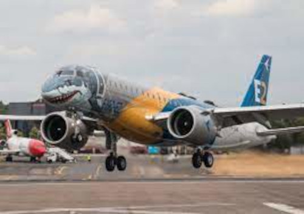

Embraer E-Jets E2
Origem: Wikipédia, a enciclopédia livre. Disambig grey.svg Nota: Para série antecessora dos E-Jets E2, veja Embraer E-Jets. Embraer E-Jets E2 Avião.
Protótipo do E2 taxiando após exibição aérea.
Descrição
Tipo / Missão Avião comercial bimotor
País de origem Brasil
Fabricante Embraer
Período de produção Em desenvolvimento
Custo unitário
E175: US$ 50.8 milhões
E190: US$ 58.2 milhões
E195: US$ 65.6 milhões
Primeiro voo em 2017
Introduzido em 2018 a Widerøe Airlines
Tripulação 2 (piloto e co-piloto)
Passageiros 80 a 144
Número de classes 2 classe(s)
Carga útil 15 150 kg (33 400 lb)
Especificações (Modelo: E195-E2)
Dimensões
Comprimento 41 m (135 ft)
Altura 10,9 m (35,8 ft)
Peso(s)
Peso máx. de decolagem 59 400 kg
(131 000 lb)
Propulsão
Motor(es) Pratt & Whitney PW1700G e Pratt & Whitney PW1900G
Força de empuxo (por motor) 9 979 kgf (97 900 N)
Performance
Velocidade máxima 870 km/h (470 kn)
Velocidade de cruzeiro 865 km/h (467 kn)
Velocidade máx. em Mach 0,82 Ma
Alcance (MTOW) 5 550 km (3 450 mi)
Teto máximo 12 500 m (41 000 ft)
Aviso
Embraer E195-E2 (ERJ 190-400 STD) PS-AEF Embraer E-Jets E2 é uma linha de aeronaves a jato bimotoras de médio alcance, desenvolvida pela companhia aeroespacial brasileira Embraer, que substituiu a família Embraer E-Jets. Lançados no Show Aéreo de Paris em 2013, a primeira entrega, um modelo E-190 E2, foi feita em 4 de abril de 2018 para a empresa norueguesa Widerøe.